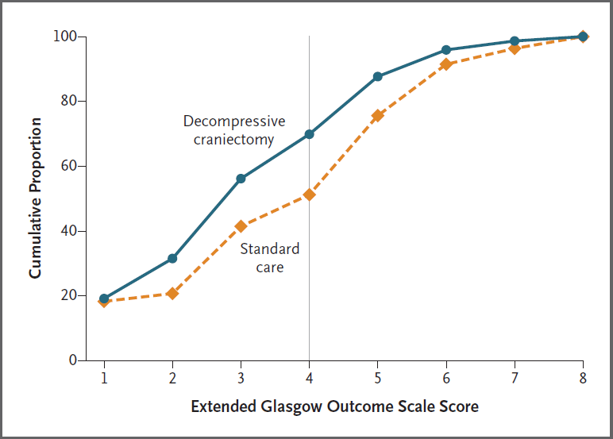
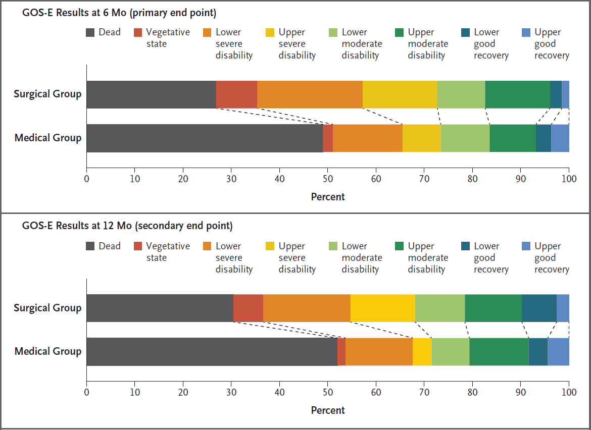

Traumatic Brain Injury
Spectrum of brain injury due to cerebral oedema and impaired autoregulation, classified by:
- Severity
- Mild
GCS 13-15.- 70-80% of all TBI.
- Brief loss of consciousness
- 70-80% of all TBI.
- Moderate
GCS 9-12 after resuscitation - Severe
GCS ⩽8 after resuscitation
- Mild
- Timing
- Primary brain injury
Neuronal death from the initial trauma.- Major determinant of outcome
- Relatively untreatable
- Secondary brain injury
Additional harm that occurs due to post-injury insults.
- Primary brain injury
Primary brain injury is the damage done when the head hits the windscreen, secondary brain injury is everything that happens afterwards. Good prehospital, ED, and ICU care involves minimising secondary brain injury, since this the time when we can intervene.
Epidemiology and Risk Factors
TBI is the:
- Leading cause of death in <45 year olds
- ↑ In males
Pathophysiology
Primary brain injury:
- Can involve various physical mechanisms:
- Impact loading
Collision of head with object. - Impulsive loading
Sudden change in motion without physical contact - Static loading
Force where speed of occurrence is not significant. - Rotational shearing
Leads to axonal stretching and tearing
- Concentrated around the grey-white matter interface as:
- Grey and white matter have slightly different densities
- Rotational force results in small differences in the velocities of each tissue type
- Concentrated around the grey-white matter interface as:
- Impact loading
- Occurs due to brain deformation via:
- Compression
- Stretch
- Shearing
- Results in a constellation of effects:
- Inflammation
Leads to cerebral oedema via:- Altered blood-brain barrier permeability
- Direct neuronal injury
- Microvascular injury
- Haemorrhage
Micro and macrovascular haemorrhage:- Extra-axial haemorrhage
- EDH
- SDH
- Intra-axial haemorrhage
- SAH
- Contusions
- Extra-axial haemorrhage
- Sympathetic surge
- Inflammation
Secondary brain injury occurs due to:
Physiological derangements from other traumatic injuries will compound to further worsen secondary brain injury.
- Cerebral ischaemia
- ↓ CPP
- Hypotension
- Hypovolaemia
- Shock
- ↑ ICP
- Cerebral oedema
- Mass effect
- Hypotension
- Hypoxaemia
- Pulmonary injury
- Neurogenic pulmonary oedema
- Direct vascular injury
Regional ischaemia.
- ↓ CPP
- Impaired cerebral autoregulation
- Hyper/hypocarbia
- Hypo/hyperthermia
- Induction of apoptosis
- Axonal degeneration
- Synaptic loss
Medium to long-term effects occur over:
- Weeks-months
- Neuroplastic remodelling
- Apoptotic cell death
- Months-years
- Further remodelling
- Cognitive dysfunction
- HPA dysfunction.
Aetiology
Primary brain injury causes include:
- Falls
Most common. - MVA
Most common cause of death. - Violence
- NAI
- Domestic violence
- Elder abuse
- Industrial accidents
- Sport
| Systemic | Intracranial |
|---|---|
|
|
Clinical Manifestations
Features include:
- Nausea/vomiting
- Cognitive dysfunction
- Behavioural change
- Obtundation → coma
Examination:
- ↑ Pupil size and ↓ reactivity suggest ↑↑↑ ICP with impending herniation
Diagnostic Approach and DDx
Investigations
Bedside:
Laboratory:
Imaging:
- CT
- Goals:
- Exclude a neurosurgically correctable mass lesion
- Grade injury
Commonly used classification systems include:- Marshall
- Rotterdam
- Findings:
- DAI
- Cerebral contusion
- Hydrocephalus
- Traumatic SAH/EDH/SDH
- Goals:
- MRI
Not indicated routinely in the acute phase. Role in:- Neuroprognostication of DAI
- Identification of intracranial vascular injury
Because EVD and ICP monitors are contraindications to MRI; MRI is only able to be performed after these have been removed (generally 7 days) and so delayed prognostication is normal.
Marshall Classification
Grades injury into six categories by degree of swelling or presence of contusions.
High/mixed density lesions refers to haemorrhage.
| Grade | Findings |
|---|---|
| I |
|
| II |
|
| III |
|
| IV |
|
| V |
|
| VI |
|
Rotterdam Classification
| Region | Score |
|---|---|
| Basal Cisterns |
|
| Midline Shift |
|
| Epidural mass lesion |
|
| IVH or SAH |
|
Rotterdam score correlates with six-month mortality in adults and children. In adults the sum score + 1 gives a mortality:
- 0%
- 7%
- 16%
- 26%
- 53%
- 61%
Other:
Management
- Correct hypoxia
- Maintain cerebral perfusion
- ↓ ICP
- Identification and treatment of other traumatic injuries
- Transfer to a neurotrauma centre
Resuscitation:
This covers brain-specific resuscitation; the principles of Damage Control Resuscitation are covered under Chapter 112.
- A
- Intubation
- Coma
- Marked agitation
- Significant extracranial trauma
- Intubation
- B
- Normal O2
PaO2 80-100mmHg. - Low-normal CO2
PaCO2 35-40mmHg. - Lung protective ventilation
PEEP of 5-10cmH2O is appropriate; ↑↑ PEEP will ↑ CVP and ↓ cerebral venous return.
- Normal O2
- C
- Defend cerebral perfusion
- Target SBP or CPP:
SBP should be targeted if ICP is not monitored, otherwise target CPP.- SBP target varies with age:
- <50: SBP >110
- 50-69: SBP >100
- >70: SBP >110
- Aim CPP 60-70mmHg if ICP >15mmHg
Can be relaxed after 72 hours as the brain enters a hyperaemic phase, although ICP <22mmHg should still be defended.
- SBP target varies with age:
- Correct hypovolaemia with blood or crystalloid
- Vasopressors appropriate once volume resuscitated
- Target SBP or CPP:
- Invasive arterial monitoring
- Defend cerebral perfusion
- D
- ICP monitoring and treatment
- Indicated for:
- Severe TBI (GCS ⩽8) with:
- Abnormal CT scan
Swelling, ICH, hydrocephalus, herniation. - Normal CT scan but ⩾2 of:
- Age >40
- Motor posturing
- SBP <90mmHg
- Abnormal CT scan
- Moderate TBI and unable to assess neurology
Discuss with neurosurgical team.
- Severe TBI (GCS ⩽8) with:
- If monitored, ICP should be kept <22mmHg
- Monitoring should occur for 72 hours - 1 week
Duration should be guided by neurosurgery and depends on:- ICP stability
- Amount of ICP intervention needed
- CT findings
- Premorbid motor score
- Pupils
- Indicated for:
- ICP monitoring and treatment
Specific therapy:
Details of ICP management including indications and treatment of ↑ ICP is covered under Chapter 75.
- Pharmacological
- ICP interventions
- Procedural
- Evacuation of extra-axial haemorrhage
- CSF drainage
- Decompressive craniectomy
- Primary (early) decompressive craniectomy
- Removal of bone flap during initial evacuation of mass lesion
- Has a defined role in specific clinical scenarios:
- Small acute SDH with overly-proportional midline shift
- Acute SDH with cerebral contusions or pupillary abnormalities
- Intraoperative ↑ ICP
- Coagulopathy
- Secondary (late) decompressive craniectomy
- Removal of bone flap for refractory ↑ ICP
- ↓↓ Mortality but ↑ morbidity in survivors
- Has a possible role in TBI
- Primary (early) decompressive craniectomy
- Physical
- Head of bed elevation
Late decompressive craniectomy results in:
- Significantly ↑ number and disability of survivors
- A greater number of survivors with a “favourable” outcome
Favourable is upper severe disability (see prognosis), or better. - A significantly greater number of survivors with severe disability or vegetative state.
Supportive care:
Basic supportive care is also known as Tier 0 therapy, and should be performed for all patients independently of ICP.
- A
- Intubation and mechanical ventilation
- Tracheostomy
Timing is controversial but is generally late as there is no clear benefit for early tracheostomy. Can be considered:- >7 days once severe TBI treatment is completed
- Neuroprognostic workup completed
- Patient has either:
- Reasonable chance of recovery to acceptable quality of life
- Require rehabilitation but are unable to protect their away
- B
- Avoid hypoxia
Target SpO2 >95%.- Supplemental oxygen as first line
- PEEP
Concern about ↑ ICP due to ↑ CVP, however adequate oxygenation takes priority.
- Avoid hypoxia
- C
- Arterial line monitoring
- D
- Sedation and analgesia
For comfort and ventilator synchrony. - Seizure prophylaxis
Can be considered to prevent early (<7 days) seizures. - Head-up positioning
Head of bed elevated to 30-35°C to ↑ cerebral venous drainage.
- Sedation and analgesia
- E
- Temperature management
Normothermia (35.5-36.5°C) should be maintained.
- Temperature management
- F
- Avoid hyponatraemia
- H
- Hb >70g/L
- Thromboprophylaxis
Difficult balance due to ↑ risk of thromboembolic events in TBI and bleeding risk of concomitant ICH. Consider:- Pneumatic calf compressors in patients without lower limb fractures
- Regular (e.g. twice weekly) lower limb DVT ultrasound
- Pharmacoprophylaxis in all patients unless:
- ICH
Timing of pharmacoprophylaxis is based on risk-benefit. In general:- Discuss with neurosurgical team
- Consider re-CT before or after commencing to evaluate for interval change
- Consider IVC filter if long-term contraindication to anticoagulation
- Destructive pathology
- ICP monitor or EVD in situ
- ICH
- IVC filter in patients who cannot be anticoagulated and have ↑↑↑ risk of DVT, e.g. pelvic or lower limb fractures
Disposition:
- Neurotrauma centre
All severely TBI should be managed at a specialist neurotrauma centre.
Preventative:
Marginal and Ineffective Therapies
- Therapeutic hypothermia
No benefit in favourable neurological outcomes, with ↑ pneumonia and bradycardia. - Colloid fluid
Associated with ↑ mortality. - Hypotonic crystalloids
Worsen cerebral oedema. - Steroids
Hartmann’s and lactated Ringer’s are hypotonic and should also be avoided.
Anaesthetic Considerations
Complications
- B
- Neurogenic pulmonary oedema
Sudden onset of pulmonary oedema due to ↑↑ sympathetic tone, classically 2-8 hours following head injury. - Pneumonia
HAP/VAP secondary to prolonged hospital stay.
- Neurogenic pulmonary oedema
- D
- Hyperglycaemia
- Critical neuroworsening
- Cerebral herniation
Should be treated immediately with:- Hyperventilation
- Osmotherapy
- G
- Feeding
Basal feeding should be established by day 5.
- Feeding
- H
- DVT/PE
Critical Neuroworsening
A sudden deterioration in neurological state is defined as new:
- Spontaneous ↓ in GCS by ⩾1 point
- ↓ Pupillary reactivity
- Pupillary asymmetry or mydriasis
- Focal deficit
- Herniation syndrome
- Cushing’s triad
Causes include:
- Neurological
- Mass lesion
- Oedema
- CVA
- Seizure/post-ictal
- CNS infection
- Substance withdrawal
- CVS
- Hypotension
- Hypovolaemia
- Metabolic
- Electrolyte disturbance
- ↓ Renal function
- ↓ Hepatic function
- Hypothermia
Management requires:
- Very low threshold for repeat CT brain
- Rapid ↑ in ICP therapy
Prognosis
Neuroprognostication itself exceedingly difficult, and made more complex as many patients will exhibit very slow improvement. Poor prognostic factors include:
- Age
- Severity of injuries
- CT findings
- Hyperglycaemia
- Hypothermia
- Hyperthermia
The Glasgow Outcome Scale - Extended (GOS-E) is commonly used to measure TBI outcome:
- Death
- Vegetative state
Unaware, periods of spontaneous eye opening, persistent reflex responses. - Lower severe disability
Dependent, unable to be left alone for >8 hours. - Upper severe disability
Dependent, able to be left alone for >8 hours. - Lower moderate disability
Independent at home, dependent outside, unable to return to work. - Upper moderate disability
Independent at home, dependent outside, able to return to work with special arrangement. - Lower good recovery
Some disability but able to return to work. - Upper good recovery
Some deficits but not disabling.
Of patients hospitalised with TBI, at 12 months:
- 27% have died
- 42% have moderate or severe disability
- 15% of remainder had persistent disability
Risk factors for post-traumatic epilepsy:
- GCS <10
- Haemorrhage
EDH, SDH, ICH, contusion. - Depressed skull fracture
- Penetrating head wound
- Seizure within 24 hours of injury
Key Studies
Decompressive Craniectomy:
- DECRA (2011)
- 155 adults with severe TBI within 72 hours of injury:
- With uncontrolled ICP (>20mmHg for 15 minutes)
- For full active treatment
- Without spinal cord injury or intracranial mass lesions
- Bifrontotemporoparietal craniectomy with bilateral dural opening vs standard care
- Control group could receive “lifesaving” craniectomy at 72 hours
- Standard ICP treatment in both groups
- Significant ↑ (70% vs 51%) in unfavourable (GOS-E 1-4) outcomes at 6 months
- Significant ↓ in ICP in intervention group
- 25% of control group crossed over
- 155 adults with severe TBI within 72 hours of injury:

- RESCUE ICP (2016)
- 408 patients aged 10-65 with TBI, abnormal CT, and ICP >25mmHg for 1-12 hours, despite tier 1 and 2 therapies
- Multicentre (52), international, parallel group, block mutated RCT, statified by site
- 400 patients gave 80% for 15% difference in favourable neurological outcome
- Decompressive craniectomy vs. standard care
- Decompressive craniectomy
- Large unilateral frontotemporoparietal craniectomy for unilateral swelling
- Bifrontal craniectomy for diffuse swelling
- Medical care
- Barbiturates
- Crossover to craniectomy permitted if decline, which occurred in 37% of patients
- Standard ICP control measures in both groups
- Decompressive craniectomy
- Decompressive craniectomy resulted in ↑ survival with a bad neurological outcome
- Slow recruitment
- High crossover from medical group
- Investigators estimated for every 100 patients receiving decompressive craniectomy there were:
- 22 survivors
- 6 vegetative
- 8 lower-severe disability
- 8 upper-severe disability
- 22 survivors

Other:
- POLAR (2018)
- 510 adults with severe TBI within 3 hours of injury, without cardiac arrest, shock, or suggestion of brain death
- 82% power to detect 15% absolute risk ↑ in favourable neurological outcome (GOS-E 5-8)
- Multicentre, international, assessor blinded, block randomised trial
- Therapeutic hypothermia vs. normothermia
- Hypothermia
- 4°C saline infusion until 35°C
- Surface cooling used to achieve 33°C
- Maintained for 3-7 days
- Rewarming individualised to ICPO
- Normothermia
- Targeting 36.5-37.5°C
- Hypothermia
- No difference in primary outcome (48.8% vs 49.1%)
- ↑ Pneumonia and bradycardia in hypothermia group
- COBI (2021)
- 370 French adults with moderate or severe TBI with radiological cranial abnormality, without cervical spine injury or at imminent risk of death, admitted to one of 9 ICUs
- 80% power to detect 20% RRR in poor neurological outcome (GOS-E 1-5) at 3 and 6 months
- Intervention arm were generally sicker, with ↑ diffuse brain injury (Marshall III/IV 17% vs 12%) as well as evacuable mass lesions (intervention on 32% vs 22%)
- Continuous infusion of 20% saline vs. usual care
- Hypertonic saline group
- Adjusted to prevent sodium >155mmol/L
- Continued for >48 hours
- Ceased when all other ICP therapies ceased for >12 hours
- Normalisation of serum sodium managed
- Usual care
- As per BTF guidelines
- Osmolar therapy permitted as rescue therapy
- No significant difference in favourable outcome (GOS-E 6-8; 32.6% vs 35.4%)
- No difference in intracranial hypertension, ICU length of stay, or adverse events
- ↑ Hypernatraemia in the intervention group
- Hypertonic saline group
- CRASH (2004)
- 10,008 patients >16 with head injury and GCS ⩽14
- Multicentre, double-blind, allocation concealed, randomised trial
- 20,000 patients gives 90% power for 2% ↓ ARR for control group mortality of 15%
- Steroids vs. placebo
- Steroids
- Methylprednisolone 2g over 1 hour, followed by 400mg/hr for 48 hours
- Placebo
- Steroids
- Stopped early for harm
- ↑ Mortality in steroid group (21% vs. 18%, RR 1.18 (CI 1.09 - 1.27), NNH ~32)
- Secondary outcomes demonstrated ↑ 6-month mortality (25.3% vs. 22.3%) and severe disability (38.1% vs. 36.3%)
- Corticosteroids should not be used for patients with head injuries
- CRASH III (2019)
- ~12,500 patients with GCS ⩽12 or CTB with haemorrhage <3 hours from injury
- 90% power for 3% ARR in hospital death from baseline 15% mortality
- Multi-centre (175!) RCT
- TXA vs. placebo
- TXA 1g and 1g infusion
- No change in mortality (18.5% vs. 19.8%)
- Significant ↓ mortality in (pre-specified) mild-moderate group (5.8% vs. 7.5%, RR 0.8 (95% CI 0.64-0.95))
- No ↑ vasoocclusive events
References
- Maas AIR, Hukkelhoven CWPM, Marshall LF, Steyerberg EW. Prediction of Outcome in Traumatic Brain Injury with Computed Tomographic Characteristics: A Comparison between the Computed Tomographic Classification and Combinations of Computed Tomographic Predictors: Neurosurgery. 2005 Dec;57(6):1173–82.
- Carney N, Totten AM, OʼReilly C, et al. Guidelines for the Management of Severe Traumatic Brain Injury, Fourth Edition: Neurosurgery. Published online September 2016:1.
- Hawryluk GWJ, Rubiano AM, Totten AM, et al. Guidelines for the Management of Severe Traumatic Brain Injury: 2020 Update of the Decompressive Craniectomy Recommendations. Neurosurgery. 2020;87(3):427-434.
- Carney N, Totten AM, OʼReilly C, et al. Guidelines for the Management of Severe Traumatic Brain Injury, Fourth Edition: Neurosurgery. Published online September 2016:1.
- Cooper DJ, Rosenfeld JV, Murray L, et al. Decompressive Craniectomy in Diffuse Traumatic Brain Injury. New England Journal of Medicine. 2011;364(16):1493-1502. doi:10.1056/NEJMoa1102077
- Hawryluk GWJ, Aguilera S, Buki A, et al. A management algorithm for patients with intracranial pressure monitoring: the Seattle International Severe Traumatic Brain Injury Consensus Conference (SIBICC). Intensive Care Med. 2019;45(12):1783-1794. doi:10.1007/s00134-019-05805-9
- Effect of Continuous Infusion of Hypertonic Saline vs Standard Care on 6-Month Neurological Outcomes in Patients With Traumatic Brain Injury: The COBI Randomized Clinical Trial | Acid Base, Electrolytes, Fluids | JAMA | JAMA Network. Accessed June 12, 2023. https://jamanetwork.com/journals/jama/article-abstract/2780326
- Cooper DJ, Nichol AD, Bailey M, et al. Effect of Early Sustained Prophylactic Hypothermia on Neurologic Outcomes Among Patients With Severe Traumatic Brain Injury: The POLAR Randomized Clinical Trial. JAMA. 2018;320(21):2211. doi:10.1001/jama.2018.17075
- Hutchinson PJ, Kolias AG, Timofeev IS, et al. Trial of Decompressive Craniectomy for Traumatic Intracranial Hypertension. N Engl J Med. 2016;375(12):1119-1130. doi:10.1056/NEJMoa1605215
- Effect of intravenous corticosteroids on death within 14 days in 10 008 adults with clinically significant head injury (MRC CRASH trial): randomised placebo-controlled trial. The Lancet. 2004;364(9442):1321-1328. doi:10.1016/S0140-6736(04)17188-2